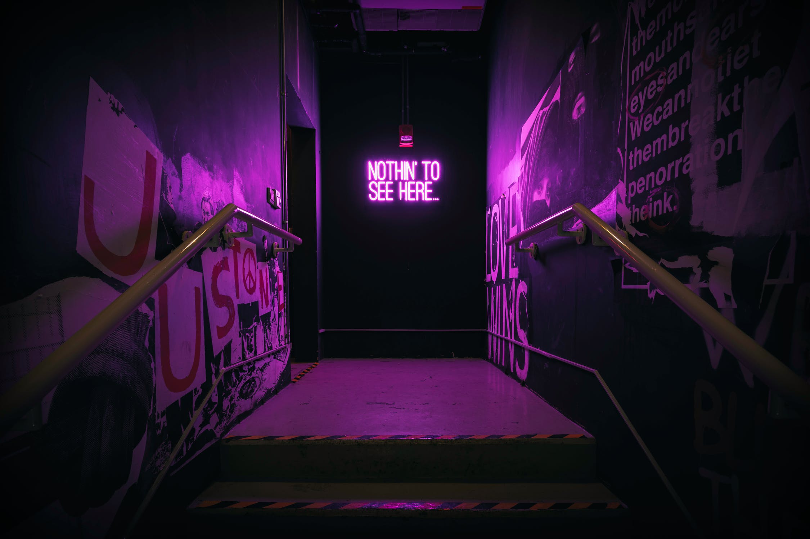

Layout a celkový design stránky bol spracovaný v ilustračnom programe Adobe XD. Návr stránky bol potom prepísaný do kódu(HTML/CSS/JS). Viac o JS je možné nájsť v 'readme.txt'. Logo som štandardne vložil do ľavého horného rohu. V celom designe webstránky boli dodržané základné princípi UX/UI designu.
Whitespace pre dostatočné odsadenie odsekov, nadpisov atd. Nesime chýbať ani visual hrierarchy, teda prisposobenie dôležitých prvkov na stránke tak, aby boli vizuálne odlišné (veľkosť písma, farby, font ...). Dôležitým prvkom sú farby, použitý štandard(biela,tmavo-fialová,fialová..) je z hľadiska farbosleposti bezpečný. Celý design bol navrhnutý tak, aby bolo všetko dobre čítateľné a príjemné na ľudské oko - kontrast. Konzistentnosť typografie atď.
Detailnejšie popisy funkcií je možné nájsť v readme.txt. ScaleUp/ScaleDown -> Zväčši/zmenši obsah sekcie. ImgDetailed/ImgNormal -> Zarovná obr. na stred + ho zväčši/zmenši. scrollSwitch -> Slúži ako prepínač. Ak ho deaktivujeme, stránka sa nebude prispôsobovať na scroll. Ak ho aktivujeme(default) stránka(sekcia) sa bude prisposobovať na scroll. Pri špecifických rozlíšeniach, budú načítane rôzne CSS súbory (700px, 900px, 1300px a 1600px), pri kt. dôjde k zmene v niektorých CSS vlastnostiach.
